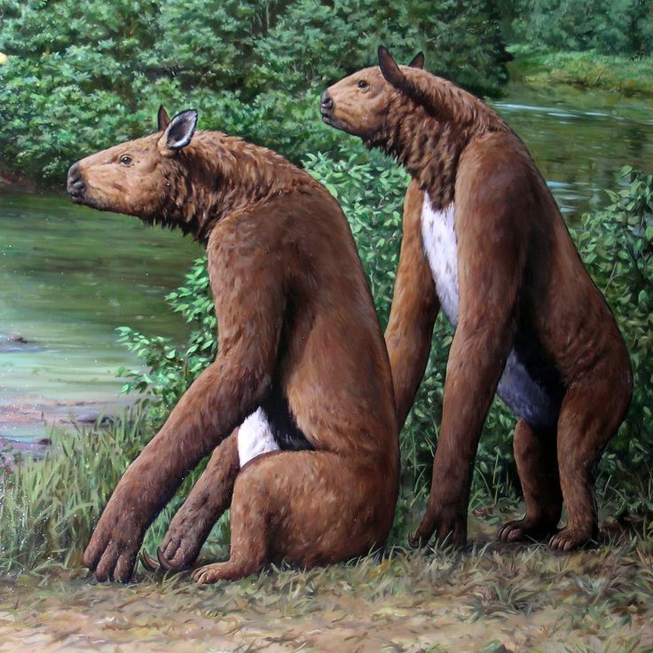
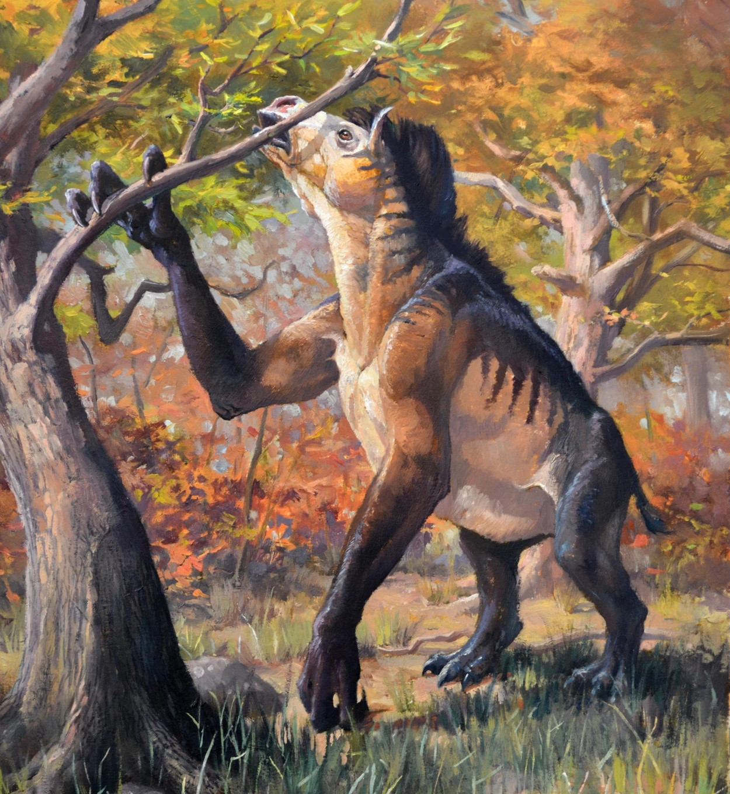
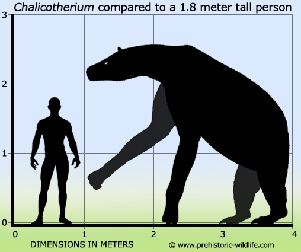
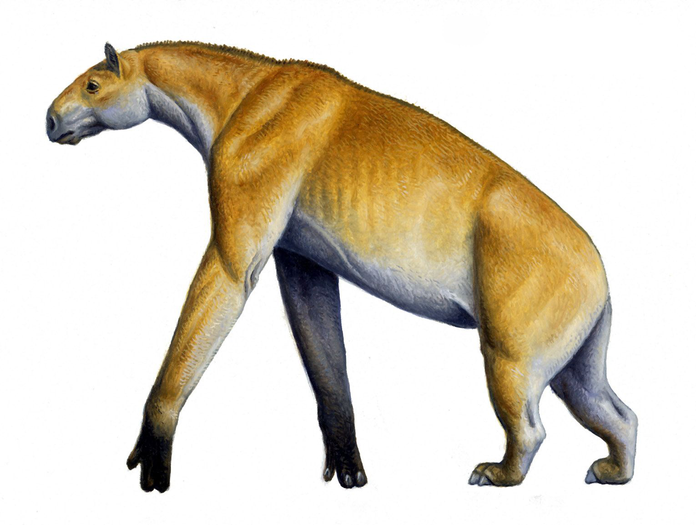
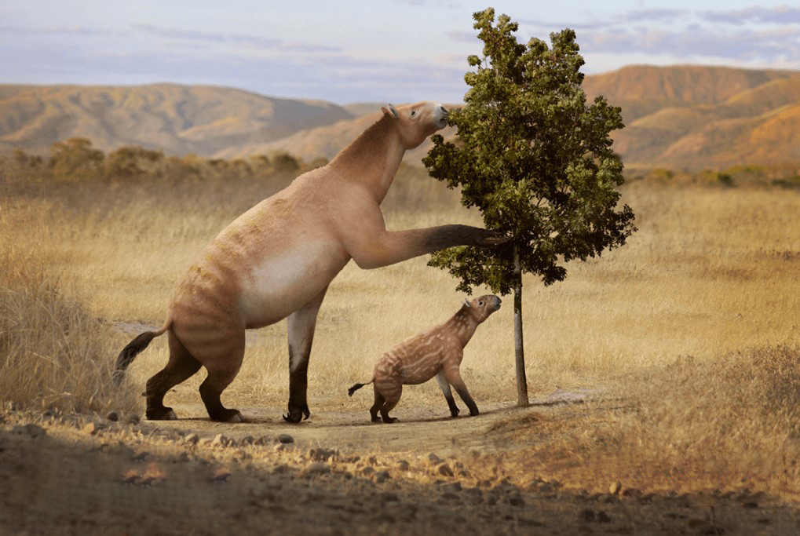
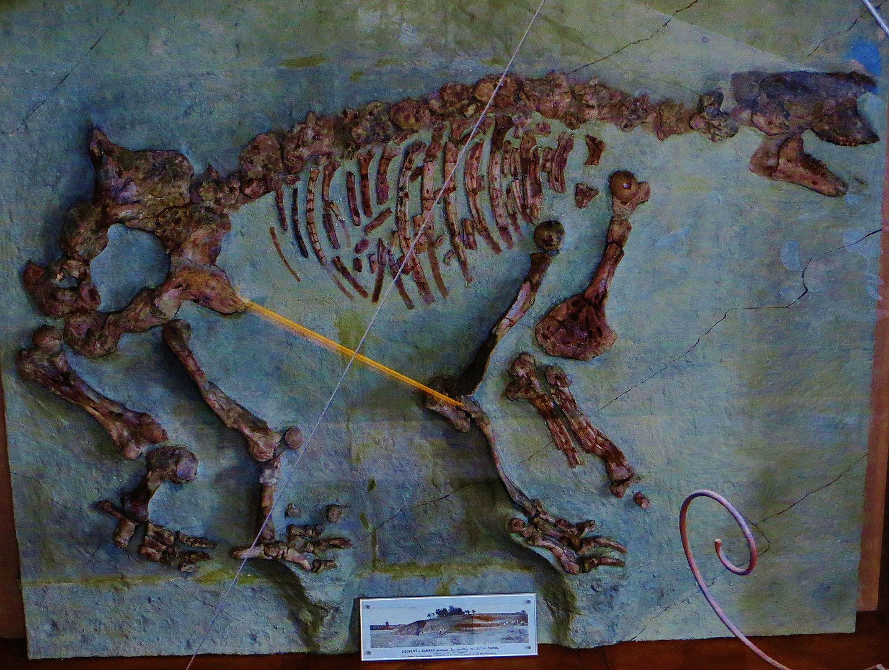

Chalicotherium
Quái vật sỏi kỷ Tân Cận
Tổng quan
Kỷ
Neogene
Họ
Chalicotheriidae
Chi
Chalicotherium
Dài
3 m
Cao
2.7 m
Nặng
1 tấn
Thức ăn
Chalicotherium là một chi điển hình của họ Chalicotheriidae, động vật ăn cỏ kỳ lạ trông giống như con lai giữa ngựa và lười đất đã tuyệt chủng, thuộc bộ Perissodactyla (bao gồm cả ngựa và tê giác). Đã từng tồn tại trong thời kỳ Hậu Oligocen đến Pliocen.
Nguồn: wikipedia.org
Phân bố
Khu vực Châu Âu, Châu Phi và Châu Á
Thông tin thêm về Chalicotherium
Kỷ nguyên và phân bố
Chalicotherium từng phân bố ở các vùng đồng bằng thuộc siêu lục địa Eurasia (lục địa Á Âu) nơi ngày nay là Châu Á, Châu Âu và Châu Phi. Chi này tồn tại từ thế Oligocen muộn đến Pliocen Hạ thuộc kỷ Neogene, khoảng từ 28,4 đến 3,6 triệu năm trước, tồn tại được khoảng 24,8 triệu năm.
Tên khoa học
Được đặt tên bởi nhà cổ sinh vật học Johann Jakob Kaup năm 1833. Chalicotherium có nghĩa là "Con thú đá cuội", đề cập đến đặc điểm những chiếc răng giống như đá cuội của chúng. Loài điển hình, Chalicotherium Goldfussi.
Kích thước
Chiều dài cơ thể của một con Chalicotherium trung bình là khoảng 3 mét, cao khoảng 2.7 mét, cùng với đó là cân nặng từ 0.6 đến 1 tấn.
Ngoại hình
Chalicotherium trông giống như các loài thuộc họ chalicotheriid khác đó là một loài động vật trông kỳ quặc với các chi trước có vuốt dài và các chi sau nặng hơn. Về hình dáng tổng thể, cơ thể và hộp sọ mỏng giống như ngựa. Các chi trước dài hơn các chi sau và lưng dốc xuống. Những chiếc răng có cấu trúc đặc biệt và không giống ngựa. Bàn chân khá đặc biệt. Không có móng guốc; thay vào đó, mỗi trong số ba ngón chân trên mỗi bàn chân kết thúc bằng một móng vuốt phát triển mạnh mẽ. Có khả năng là sự phát triển của móng vuốt có liên quan đến thói quen kiếm ăn của con vật.
Chế độ ăn
Bản thân cái đầu giống ngựa cho thấy Chalicotherium thích nghi với chế độ ăn thực vật mềm. Các cánh tay được sử dụng để với lấy cành cây lớn và đưa chúng lại gần cái đầu dài của nó để tước sạch lá; móng vuốt cũng có thể đã được sử dụng để đào rễ và củ.
Khám phá
Các mẫu hóa thạch điển hình cho Chalicotherium Goldfussi đã được tìm thấy ở tầng Thượng Miocen của các tầng Dinotherien-sande gần Eppelsheim, thuộc Đại công quốc Hesse, Đức. Johann Jakob Kaup, khi mô tả loài động vật mới này vào năm 1833, đã nhận thấy những chiếc răng giống như đá cuội và đặt tên cho sinh vật này theo đó. Sau đó, các chi được tìm thấy trong các tầng nằm ở Sansan thuộc tỉnh Gers, Tây Nam nước Pháp, lần đầu tiên được Édouard Lartet mô tả là Macrotherium vào năm 1837. Nghiên cứu sâu hơn về những di tích hóa thạch này và những phát hiện tiếp theo của Filhol đã khẳng định các hóa thạch được mô tả là chi Chalicotherium hay Macrotherium.
